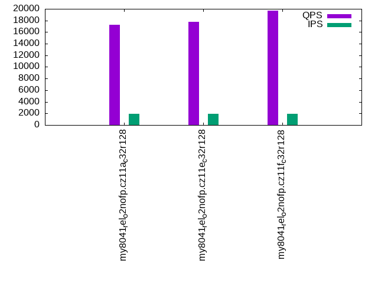

This is a report for the insert benchmark with 4000M docs and 20 client(s). It is generated by scripts (bash, awk, sed) and Tufte might not be impressed. An overview of the insert benchmark is here and a short update is here. Below, by DBMS, I mean DBMS+version.config. An example is my8020.c10b40 where my means MySQL, 8020 is version 8.0.20 and c10b40 is the name for the configuration file.
The test server is an ax162-s from Hetzner (see here) with 48 cores, AMD SMT disabled, 128G RAM and ext4 using 2 NVMe devices with SW RAID 1. The benchmark was run with 20 clients and there were 1 or 3 connections per client (1 for queries or inserts without rate limits, 1+1 for rate limited inserts+deletes). It uses 8 tables with a table per client. It loads 200M rows per table without secondary indexes, creates 3 secondary indexes per table, then inserts 4m+1m rows per table with a delete per insert to avoid growing the table. It then does 6 read+write tests for 1800s each that do queries as fast as possible with 100,100,500,500,1000,1000 inserts/s and the same for deletes/s per client concurrent with the queries. The database is larger than memory. Clients and the DBMS share one server.
The tested DBMS are:
The numbers are inserts/s for l.i0, l.i1 and l.i2, indexed docs (or rows) /s for l.x and queries/s for qr100, qp100 thru qr1000, qp1000" The values are the average rate over the entire test for inserts (IPS) and queries (QPS). The range of values for IPS and QPS is split into 3 parts: bottom 25%, middle 50%, top 25%. Values in the bottom 25% have a red background, values in the top 25% have a green background and values in the middle have no color. A gray background is used for values that can be ignored because the DBMS did not sustain the target insert rate. Red backgrounds are not used when the minimum value is within 80% of the max value.
| dbms | l.i0 | l.x | l.i1 | l.i2 | qr100 | qp100 | qr500 | qp500 | qr1000 | qp1000 |
|---|---|---|---|---|---|---|---|---|---|---|
| my8041_rel_o2nofp.cz11a_c32r128 | 1437814 | 1410935 | 16649 | 5769 | 183469 | 17302 | 161764 | 9203 | 119600 | 8753 |
| my8041_rel_o2nofp.cz11e_c32r128 | 1423488 | 1314060 | 16946 | 6323 | 183424 | 17736 | 162341 | 9953 | 124766 | 9550 |
| my8041_rel_o2nofp.cz11f_c32r128 | 1445609 | 1503194 | 21316 | 7849 | 183727 | 19677 | 165098 | 13004 | 137162 | 12402 |
This table has relative throughput, throughput for the DBMS relative to the DBMS in the first line, using the absolute throughput from the previous table. Values less than 0.95 have a yellow background. Values greater than 1.05 have a blue background.
| dbms | l.i0 | l.x | l.i1 | l.i2 | qr100 | qp100 | qr500 | qp500 | qr1000 | qp1000 |
|---|---|---|---|---|---|---|---|---|---|---|
| my8041_rel_o2nofp.cz11a_c32r128 | 1.00 | 1.00 | 1.00 | 1.00 | 1.00 | 1.00 | 1.00 | 1.00 | 1.00 | 1.00 |
| my8041_rel_o2nofp.cz11e_c32r128 | 0.99 | 0.93 | 1.02 | 1.10 | 1.00 | 1.03 | 1.00 | 1.08 | 1.04 | 1.09 |
| my8041_rel_o2nofp.cz11f_c32r128 | 1.01 | 1.07 | 1.28 | 1.36 | 1.00 | 1.14 | 1.02 | 1.41 | 1.15 | 1.42 |
This lists the average rate of inserts/s for the tests that do inserts concurrent with queries. For such tests the query rate is listed in the table above. The read+write tests are setup so that the insert rate should match the target rate every second. Cells that are not at least 95% of the target have a red background to indicate a failure to satisfy the target.
| dbms | qr100.L1 | qp100.L2 | qr500.L3 | qp500.L4 | qr1000.L5 | qp1000.L6 |
|---|---|---|---|---|---|---|
| my8041_rel_o2nofp.cz11a_c32r128 | 1977 | 1976 | 9885 | 9885 | 19769 | 12843 |
| my8041_rel_o2nofp.cz11e_c32r128 | 1977 | 1977 | 9885 | 9885 | 19769 | 14913 |
| my8041_rel_o2nofp.cz11f_c32r128 | 1977 | 1978 | 9879 | 9885 | 19769 | 19758 |
| target | 2000 | 2000 | 10000 | 10000 | 20000 | 20000 |
l.i0: load without secondary indexes. Graphs for performance per 1-second interval are here.
Average throughput:
Insert response time histogram: each cell has the percentage of responses that take <= the time in the header and max is the max response time in seconds. For the max column values in the top 25% of the range have a red background and in the bottom 25% of the range have a green background. The red background is not used when the min value is within 80% of the max value.
| dbms | 256us | 1ms | 4ms | 16ms | 64ms | 256ms | 1s | 4s | 16s | gt | max |
|---|---|---|---|---|---|---|---|---|---|---|---|
| my8041_rel_o2nofp.cz11a_c32r128 | 0.107 | 99.789 | 0.055 | 0.010 | 0.038 | 0.215 | |||||
| my8041_rel_o2nofp.cz11e_c32r128 | 0.078 | 99.754 | 0.106 | 0.023 | 0.038 | 0.239 | |||||
| my8041_rel_o2nofp.cz11f_c32r128 | 0.081 | 99.817 | 0.051 | 0.012 | 0.039 | 0.242 |
Performance metrics for the DBMS listed above. Some are normalized by throughput, others are not. Legend for results is here.
ips qps rps rmbps wps wmbps rpq rkbpq wpi wkbpi csps cpups cspq cpupq dbgb1 dbgb2 rss maxop p50 p99 tag 1437814 0 4 0.1 9766.6 532.9 0.000 0.000 0.007 0.379 296397 55.0 0.206 18 262.3 362.8 105.0 0.215 75119 62753 my8041_rel_o2nofp.cz11a_c32r128 1423488 0 7 0.1 9662.1 526.9 0.000 0.000 0.007 0.379 288871 54.7 0.203 18 262.3 362.9 108.2 0.239 74120 61134 my8041_rel_o2nofp.cz11e_c32r128 1445609 0 4 0.0 9059.3 444.0 0.000 0.000 0.006 0.315 296398 55.1 0.205 18 262.3 362.8 108.5 0.242 75119 62931 my8041_rel_o2nofp.cz11f_c32r128
l.x: create secondary indexes.
Average throughput:
Performance metrics for the DBMS listed above. Some are normalized by throughput, others are not. Legend for results is here.
ips qps rps rmbps wps wmbps rpq rkbpq wpi wkbpi csps cpups cspq cpupq dbgb1 dbgb2 rss maxop p50 p99 tag 1410935 0 25804 1626.9 42163.7 1852.1 0.018 1.181 0.030 1.344 253299 46.0 0.180 16 603.6 704.2 105.2 0.003 NA NA my8041_rel_o2nofp.cz11a_c32r128 1314060 0 24150 1517.2 38582.9 1724.9 0.018 1.182 0.029 1.344 241541 42.1 0.184 15 603.6 704.2 105.0 0.015 NA NA my8041_rel_o2nofp.cz11e_c32r128 1503194 0 27544 1736.7 40456.6 1855.2 0.018 1.183 0.027 1.264 215788 40.2 0.144 13 603.6 704.2 108.2 0.006 NA NA my8041_rel_o2nofp.cz11f_c32r128
l.i1: continue load after secondary indexes created with 50 inserts per transaction. Graphs for performance per 1-second interval are here.
Average throughput:
Insert response time histogram: each cell has the percentage of responses that take <= the time in the header and max is the max response time in seconds. For the max column values in the top 25% of the range have a red background and in the bottom 25% of the range have a green background. The red background is not used when the min value is within 80% of the max value.
| dbms | 256us | 1ms | 4ms | 16ms | 64ms | 256ms | 1s | 4s | 16s | gt | max |
|---|---|---|---|---|---|---|---|---|---|---|---|
| my8041_rel_o2nofp.cz11a_c32r128 | 0.134 | 14.759 | 39.022 | 46.046 | 0.040 | 0.362 | |||||
| my8041_rel_o2nofp.cz11e_c32r128 | 0.120 | 15.968 | 42.760 | 40.721 | 0.430 | 0.523 | |||||
| my8041_rel_o2nofp.cz11f_c32r128 | 0.101 | 18.684 | 59.535 | 21.678 | 0.001 | 0.339 |
Delete response time histogram: each cell has the percentage of responses that take <= the time in the header and max is the max response time in seconds. For the max column values in the top 25% of the range have a red background and in the bottom 25% of the range have a green background. The red background is not used when the min value is within 80% of the max value.
| dbms | 256us | 1ms | 4ms | 16ms | 64ms | 256ms | 1s | 4s | 16s | gt | max |
|---|---|---|---|---|---|---|---|---|---|---|---|
| my8041_rel_o2nofp.cz11a_c32r128 | 19.435 | 19.493 | 28.680 | 32.392 | 0.195 | ||||||
| my8041_rel_o2nofp.cz11e_c32r128 | 18.506 | 19.617 | 35.525 | 26.350 | 0.002 | 0.284 | |||||
| my8041_rel_o2nofp.cz11f_c32r128 | 18.744 | 20.634 | 47.569 | 13.053 | 0.001 | 0.312 |
Performance metrics for the DBMS listed above. Some are normalized by throughput, others are not. Legend for results is here.
ips qps rps rmbps wps wmbps rpq rkbpq wpi wkbpi csps cpups cspq cpupq dbgb1 dbgb2 rss maxop p50 p99 tag 16649 0 37593 587.4 53671.8 1515.0 2.258 36.127 3.224 93.178 334031 21.4 20.063 617 819.3 935.7 107.7 0.362 699 450 my8041_rel_o2nofp.cz11a_c32r128 16946 0 38318 598.7 53427.5 1548.2 2.261 36.179 3.153 93.557 329412 22.1 19.439 626 819.2 935.8 107.5 0.523 699 300 my8041_rel_o2nofp.cz11e_c32r128 21316 0 48363 755.7 58654.1 1052.1 2.269 36.301 2.752 50.539 460110 27.7 21.585 624 819.3 935.6 107.2 0.339 849 599 my8041_rel_o2nofp.cz11f_c32r128
l.i2: continue load after secondary indexes created with 5 inserts per transaction. Graphs for performance per 1-second interval are here.
Average throughput:
Insert response time histogram: each cell has the percentage of responses that take <= the time in the header and max is the max response time in seconds. For the max column values in the top 25% of the range have a red background and in the bottom 25% of the range have a green background. The red background is not used when the min value is within 80% of the max value.
| dbms | 256us | 1ms | 4ms | 16ms | 64ms | 256ms | 1s | 4s | 16s | gt | max |
|---|---|---|---|---|---|---|---|---|---|---|---|
| my8041_rel_o2nofp.cz11a_c32r128 | 0.306 | 72.691 | 26.930 | 0.073 | 0.143 | ||||||
| my8041_rel_o2nofp.cz11e_c32r128 | 0.147 | 74.365 | 25.401 | 0.087 | 0.111 | ||||||
| my8041_rel_o2nofp.cz11f_c32r128 | nonzero | 7.065 | 70.981 | 21.912 | 0.041 | 0.136 |
Delete response time histogram: each cell has the percentage of responses that take <= the time in the header and max is the max response time in seconds. For the max column values in the top 25% of the range have a red background and in the bottom 25% of the range have a green background. The red background is not used when the min value is within 80% of the max value.
| dbms | 256us | 1ms | 4ms | 16ms | 64ms | 256ms | 1s | 4s | 16s | gt | max |
|---|---|---|---|---|---|---|---|---|---|---|---|
| my8041_rel_o2nofp.cz11a_c32r128 | 0.513 | 73.343 | 26.121 | 0.023 | 0.142 | ||||||
| my8041_rel_o2nofp.cz11e_c32r128 | 1.447 | 74.005 | 24.514 | 0.034 | 0.111 | ||||||
| my8041_rel_o2nofp.cz11f_c32r128 | 0.003 | 17.777 | 60.720 | 21.482 | 0.018 | 0.134 |
Performance metrics for the DBMS listed above. Some are normalized by throughput, others are not. Legend for results is here.
ips qps rps rmbps wps wmbps rpq rkbpq wpi wkbpi csps cpups cspq cpupq dbgb1 dbgb2 rss maxop p50 p99 tag 5769 0 39117 611.2 50202.5 1427.0 6.781 108.497 8.703 253.313 334349 17.6 57.960 1464 819.3 932.9 106.0 0.143 145 80 my8041_rel_o2nofp.cz11a_c32r128 6323 0 42832 669.3 54862.1 1553.6 6.774 108.383 8.676 251.592 352057 19.4 55.678 1473 819.2 932.8 106.0 0.111 155 90 my8041_rel_o2nofp.cz11e_c32r128 7849 0 52246 816.3 58728.5 973.3 6.656 106.500 7.482 126.970 489386 23.4 62.349 1431 819.3 932.8 106.7 0.136 175 100 my8041_rel_o2nofp.cz11f_c32r128
qr100.L1: range queries with 100 insert/s per client. Graphs for performance per 1-second interval are here.
Average throughput:
Query response time histogram: each cell has the percentage of responses that take <= the time in the header and max is the max response time in seconds. For max values in the top 25% of the range have a red background and in the bottom 25% of the range have a green background. The red background is not used when the min value is within 80% of the max value.
| dbms | 256us | 1ms | 4ms | 16ms | 64ms | 256ms | 1s | 4s | 16s | gt | max |
|---|---|---|---|---|---|---|---|---|---|---|---|
| my8041_rel_o2nofp.cz11a_c32r128 | 99.886 | 0.111 | 0.003 | nonzero | nonzero | 0.018 | |||||
| my8041_rel_o2nofp.cz11e_c32r128 | 99.886 | 0.109 | 0.005 | nonzero | nonzero | 0.027 | |||||
| my8041_rel_o2nofp.cz11f_c32r128 | 99.896 | 0.100 | 0.004 | nonzero | 0.012 |
Insert response time histogram: each cell has the percentage of responses that take <= the time in the header and max is the max response time in seconds. For max values in the top 25% of the range have a red background and in the bottom 25% of the range have a green background. The red background is not used when the min value is within 80% of the max value.
| dbms | 256us | 1ms | 4ms | 16ms | 64ms | 256ms | 1s | 4s | 16s | gt | max |
|---|---|---|---|---|---|---|---|---|---|---|---|
| my8041_rel_o2nofp.cz11a_c32r128 | 90.039 | 9.961 | 0.041 | ||||||||
| my8041_rel_o2nofp.cz11e_c32r128 | 86.078 | 13.360 | 0.562 | 0.130 | |||||||
| my8041_rel_o2nofp.cz11f_c32r128 | 94.685 | 5.315 | 0.050 |
Delete response time histogram: each cell has the percentage of responses that take <= the time in the header and max is the max response time in seconds. For max values in the top 25% of the range have a red background and in the bottom 25% of the range have a green background. The red background is not used when the min value is within 80% of the max value.
| dbms | 256us | 1ms | 4ms | 16ms | 64ms | 256ms | 1s | 4s | 16s | gt | max |
|---|---|---|---|---|---|---|---|---|---|---|---|
| my8041_rel_o2nofp.cz11a_c32r128 | 90.315 | 9.683 | 0.001 | 0.017 | |||||||
| my8041_rel_o2nofp.cz11e_c32r128 | 87.515 | 11.440 | 1.035 | 0.010 | 0.071 | ||||||
| my8041_rel_o2nofp.cz11f_c32r128 | 91.806 | 8.193 | 0.001 | 0.038 |
Performance metrics for the DBMS listed above. Some are normalized by throughput, others are not. Legend for results is here.
ips qps rps rmbps wps wmbps rpq rkbpq wpi wkbpi csps cpups cspq cpupq dbgb1 dbgb2 rss maxop p50 p99 tag 1977 183469 8292 129.8 9272.5 263.8 0.045 0.725 4.690 136.656 745277 45.0 4.062 118 819.3 932.9 106.0 0.018 9302 8719 my8041_rel_o2nofp.cz11a_c32r128 1977 183424 8288 129.5 9267.2 262.8 0.045 0.723 4.688 136.141 743375 45.0 4.053 118 819.2 932.8 106.0 0.027 9254 8678 my8041_rel_o2nofp.cz11e_c32r128 1977 183727 8270 129.2 8061.1 133.7 0.045 0.720 4.078 69.270 750241 45.2 4.083 118 819.3 932.8 106.4 0.012 9302 8758 my8041_rel_o2nofp.cz11f_c32r128
qp100.L2: point queries with 100 insert/s per client. Graphs for performance per 1-second interval are here.
Average throughput:
Query response time histogram: each cell has the percentage of responses that take <= the time in the header and max is the max response time in seconds. For max values in the top 25% of the range have a red background and in the bottom 25% of the range have a green background. The red background is not used when the min value is within 80% of the max value.
| dbms | 256us | 1ms | 4ms | 16ms | 64ms | 256ms | 1s | 4s | 16s | gt | max |
|---|---|---|---|---|---|---|---|---|---|---|---|
| my8041_rel_o2nofp.cz11a_c32r128 | 0.002 | 51.499 | 47.670 | 0.829 | 0.014 | ||||||
| my8041_rel_o2nofp.cz11e_c32r128 | 0.002 | 52.299 | 47.375 | 0.321 | 0.002 | 0.035 | |||||
| my8041_rel_o2nofp.cz11f_c32r128 | 0.003 | 59.829 | 40.114 | 0.054 | 0.015 |
Insert response time histogram: each cell has the percentage of responses that take <= the time in the header and max is the max response time in seconds. For max values in the top 25% of the range have a red background and in the bottom 25% of the range have a green background. The red background is not used when the min value is within 80% of the max value.
| dbms | 256us | 1ms | 4ms | 16ms | 64ms | 256ms | 1s | 4s | 16s | gt | max |
|---|---|---|---|---|---|---|---|---|---|---|---|
| my8041_rel_o2nofp.cz11a_c32r128 | 42.315 | 57.685 | 0.063 | ||||||||
| my8041_rel_o2nofp.cz11e_c32r128 | 62.310 | 37.617 | 0.074 | 0.109 | |||||||
| my8041_rel_o2nofp.cz11f_c32r128 | 80.239 | 19.761 | 0.036 |
Delete response time histogram: each cell has the percentage of responses that take <= the time in the header and max is the max response time in seconds. For max values in the top 25% of the range have a red background and in the bottom 25% of the range have a green background. The red background is not used when the min value is within 80% of the max value.
| dbms | 256us | 1ms | 4ms | 16ms | 64ms | 256ms | 1s | 4s | 16s | gt | max |
|---|---|---|---|---|---|---|---|---|---|---|---|
| my8041_rel_o2nofp.cz11a_c32r128 | 88.867 | 11.132 | 0.001 | 0.022 | |||||||
| my8041_rel_o2nofp.cz11e_c32r128 | 87.675 | 12.314 | 0.011 | 0.023 | |||||||
| my8041_rel_o2nofp.cz11f_c32r128 | 88.947 | 11.025 | 0.028 | 0.030 |
Performance metrics for the DBMS listed above. Some are normalized by throughput, others are not. Legend for results is here.
ips qps rps rmbps wps wmbps rpq rkbpq wpi wkbpi csps cpups cspq cpupq dbgb1 dbgb2 rss maxop p50 p99 tag 1976 17302 127100 1985.9 17395.6 485.1 7.346 117.536 8.804 251.420 374577 16.8 21.649 466 819.3 932.9 106.0 0.014 911 352 my8041_rel_o2nofp.cz11a_c32r128 1977 17736 129674 2026.2 17472.8 485.7 7.311 116.979 8.838 251.571 375190 17.0 21.154 460 819.2 932.8 106.0 0.035 927 400 my8041_rel_o2nofp.cz11e_c32r128 1978 19677 141482 2210.7 15458.5 249.2 7.190 115.043 7.815 128.998 423223 18.1 21.508 442 819.3 932.8 106.3 0.015 1007 687 my8041_rel_o2nofp.cz11f_c32r128
qr500.L3: range queries with 500 insert/s per client. Graphs for performance per 1-second interval are here.
Average throughput:
Query response time histogram: each cell has the percentage of responses that take <= the time in the header and max is the max response time in seconds. For max values in the top 25% of the range have a red background and in the bottom 25% of the range have a green background. The red background is not used when the min value is within 80% of the max value.
| dbms | 256us | 1ms | 4ms | 16ms | 64ms | 256ms | 1s | 4s | 16s | gt | max |
|---|---|---|---|---|---|---|---|---|---|---|---|
| my8041_rel_o2nofp.cz11a_c32r128 | 99.322 | 0.652 | 0.024 | 0.002 | nonzero | 0.027 | |||||
| my8041_rel_o2nofp.cz11e_c32r128 | 99.272 | 0.690 | 0.036 | 0.002 | nonzero | 0.037 | |||||
| my8041_rel_o2nofp.cz11f_c32r128 | 99.365 | 0.607 | 0.026 | 0.001 | nonzero | 0.021 |
Insert response time histogram: each cell has the percentage of responses that take <= the time in the header and max is the max response time in seconds. For max values in the top 25% of the range have a red background and in the bottom 25% of the range have a green background. The red background is not used when the min value is within 80% of the max value.
| dbms | 256us | 1ms | 4ms | 16ms | 64ms | 256ms | 1s | 4s | 16s | gt | max |
|---|---|---|---|---|---|---|---|---|---|---|---|
| my8041_rel_o2nofp.cz11a_c32r128 | 21.452 | 78.186 | 0.363 | 0.098 | |||||||
| my8041_rel_o2nofp.cz11e_c32r128 | 29.525 | 70.267 | 0.207 | 0.113 | |||||||
| my8041_rel_o2nofp.cz11f_c32r128 | 56.632 | 43.368 | 0.053 |
Delete response time histogram: each cell has the percentage of responses that take <= the time in the header and max is the max response time in seconds. For max values in the top 25% of the range have a red background and in the bottom 25% of the range have a green background. The red background is not used when the min value is within 80% of the max value.
| dbms | 256us | 1ms | 4ms | 16ms | 64ms | 256ms | 1s | 4s | 16s | gt | max |
|---|---|---|---|---|---|---|---|---|---|---|---|
| my8041_rel_o2nofp.cz11a_c32r128 | 62.105 | 37.619 | 0.275 | 0.030 | |||||||
| my8041_rel_o2nofp.cz11e_c32r128 | 45.276 | 52.741 | 1.982 | nonzero | 0.067 | ||||||
| my8041_rel_o2nofp.cz11f_c32r128 | 41.168 | 58.460 | 0.372 | 0.041 |
Performance metrics for the DBMS listed above. Some are normalized by throughput, others are not. Legend for results is here.
ips qps rps rmbps wps wmbps rpq rkbpq wpi wkbpi csps cpups cspq cpupq dbgb1 dbgb2 rss maxop p50 p99 tag 9885 161764 37370 583.9 45160.6 1253.0 0.231 3.696 4.569 129.804 813816 54.7 5.031 162 819.3 932.9 106.0 0.027 8135 7167 my8041_rel_o2nofp.cz11a_c32r128 9885 162341 37544 586.6 44651.1 1261.0 0.231 3.700 4.517 130.633 800243 54.8 4.929 162 819.2 932.8 106.0 0.037 8206 7288 my8041_rel_o2nofp.cz11e_c32r128 9879 165098 37554 586.8 39413.4 650.4 0.227 3.639 3.990 67.412 839021 54.4 5.082 158 819.3 932.8 106.2 0.021 8363 7576 my8041_rel_o2nofp.cz11f_c32r128
qp500.L4: point queries with 500 insert/s per client. Graphs for performance per 1-second interval are here.
Average throughput:
Query response time histogram: each cell has the percentage of responses that take <= the time in the header and max is the max response time in seconds. For max values in the top 25% of the range have a red background and in the bottom 25% of the range have a green background. The red background is not used when the min value is within 80% of the max value.
| dbms | 256us | 1ms | 4ms | 16ms | 64ms | 256ms | 1s | 4s | 16s | gt | max |
|---|---|---|---|---|---|---|---|---|---|---|---|
| my8041_rel_o2nofp.cz11a_c32r128 | nonzero | 8.393 | 82.560 | 9.044 | 0.002 | 0.034 | |||||
| my8041_rel_o2nofp.cz11e_c32r128 | nonzero | 8.729 | 87.304 | 3.950 | 0.016 | 0.048 | |||||
| my8041_rel_o2nofp.cz11f_c32r128 | nonzero | 18.531 | 79.985 | 1.484 | nonzero | 0.025 |
Insert response time histogram: each cell has the percentage of responses that take <= the time in the header and max is the max response time in seconds. For max values in the top 25% of the range have a red background and in the bottom 25% of the range have a green background. The red background is not used when the min value is within 80% of the max value.
| dbms | 256us | 1ms | 4ms | 16ms | 64ms | 256ms | 1s | 4s | 16s | gt | max |
|---|---|---|---|---|---|---|---|---|---|---|---|
| my8041_rel_o2nofp.cz11a_c32r128 | 9.371 | 90.530 | 0.098 | 0.115 | |||||||
| my8041_rel_o2nofp.cz11e_c32r128 | 17.215 | 82.637 | 0.148 | 0.126 | |||||||
| my8041_rel_o2nofp.cz11f_c32r128 | 43.044 | 56.956 | nonzero | 0.079 |
Delete response time histogram: each cell has the percentage of responses that take <= the time in the header and max is the max response time in seconds. For max values in the top 25% of the range have a red background and in the bottom 25% of the range have a green background. The red background is not used when the min value is within 80% of the max value.
| dbms | 256us | 1ms | 4ms | 16ms | 64ms | 256ms | 1s | 4s | 16s | gt | max |
|---|---|---|---|---|---|---|---|---|---|---|---|
| my8041_rel_o2nofp.cz11a_c32r128 | 31.679 | 67.198 | 1.122 | 0.040 | |||||||
| my8041_rel_o2nofp.cz11e_c32r128 | 39.476 | 59.615 | 0.909 | 0.058 | |||||||
| my8041_rel_o2nofp.cz11f_c32r128 | 81.551 | 18.430 | 0.019 | 0.041 |
Performance metrics for the DBMS listed above. Some are normalized by throughput, others are not. Legend for results is here.
ips qps rps rmbps wps wmbps rpq rkbpq wpi wkbpi csps cpups cspq cpupq dbgb1 dbgb2 rss maxop p50 p99 tag 9885 9203 110071 1719.9 48342.5 1323.7 11.960 191.366 4.891 137.126 428741 22.7 46.587 1184 819.3 932.9 106.0 0.034 479 240 my8041_rel_o2nofp.cz11a_c32r128 9885 9953 120015 1875.3 52167.4 1457.3 12.058 192.928 5.278 150.967 449070 24.3 45.118 1172 819.2 932.8 106.0 0.048 511 304 my8041_rel_o2nofp.cz11e_c32r128 9885 13004 150543 2352.2 55506.7 899.4 11.576 185.219 5.615 93.174 599071 27.4 46.066 1011 819.3 932.8 106.0 0.025 656 527 my8041_rel_o2nofp.cz11f_c32r128
qr1000.L5: range queries with 1000 insert/s per client. Graphs for performance per 1-second interval are here.
Average throughput:
Query response time histogram: each cell has the percentage of responses that take <= the time in the header and max is the max response time in seconds. For max values in the top 25% of the range have a red background and in the bottom 25% of the range have a green background. The red background is not used when the min value is within 80% of the max value.
| dbms | 256us | 1ms | 4ms | 16ms | 64ms | 256ms | 1s | 4s | 16s | gt | max |
|---|---|---|---|---|---|---|---|---|---|---|---|
| my8041_rel_o2nofp.cz11a_c32r128 | 95.975 | 3.133 | 0.880 | 0.013 | nonzero | 0.033 | |||||
| my8041_rel_o2nofp.cz11e_c32r128 | 96.502 | 2.745 | 0.737 | 0.017 | nonzero | 0.060 | |||||
| my8041_rel_o2nofp.cz11f_c32r128 | 97.614 | 1.951 | 0.427 | 0.008 | nonzero | 0.032 |
Insert response time histogram: each cell has the percentage of responses that take <= the time in the header and max is the max response time in seconds. For max values in the top 25% of the range have a red background and in the bottom 25% of the range have a green background. The red background is not used when the min value is within 80% of the max value.
| dbms | 256us | 1ms | 4ms | 16ms | 64ms | 256ms | 1s | 4s | 16s | gt | max |
|---|---|---|---|---|---|---|---|---|---|---|---|
| my8041_rel_o2nofp.cz11a_c32r128 | nonzero | 36.078 | 63.905 | 0.016 | 0.086 | ||||||
| my8041_rel_o2nofp.cz11e_c32r128 | nonzero | 37.622 | 62.206 | 0.172 | 0.129 | ||||||
| my8041_rel_o2nofp.cz11f_c32r128 | nonzero | 51.395 | 48.599 | 0.006 | 0.094 |
Delete response time histogram: each cell has the percentage of responses that take <= the time in the header and max is the max response time in seconds. For max values in the top 25% of the range have a red background and in the bottom 25% of the range have a green background. The red background is not used when the min value is within 80% of the max value.
| dbms | 256us | 1ms | 4ms | 16ms | 64ms | 256ms | 1s | 4s | 16s | gt | max |
|---|---|---|---|---|---|---|---|---|---|---|---|
| my8041_rel_o2nofp.cz11a_c32r128 | 32.568 | 64.988 | 2.444 | 0.051 | |||||||
| my8041_rel_o2nofp.cz11e_c32r128 | 32.964 | 63.546 | 3.487 | 0.003 | 0.084 | ||||||
| my8041_rel_o2nofp.cz11f_c32r128 | 37.810 | 60.630 | 1.560 | nonzero | 0.089 |
Performance metrics for the DBMS listed above. Some are normalized by throughput, others are not. Legend for results is here.
ips qps rps rmbps wps wmbps rpq rkbpq wpi wkbpi csps cpups cspq cpupq dbgb1 dbgb2 rss maxop p50 p99 tag 19769 119600 37236 581.8 47725.6 1357.7 0.311 4.981 2.414 70.326 672611 59.4 5.624 238 819.3 933.7 106.0 0.033 6025 5210 my8041_rel_o2nofp.cz11a_c32r128 19769 124766 38739 605.3 49605.9 1409.3 0.310 4.968 2.509 72.998 680157 59.9 5.451 230 819.2 933.4 106.0 0.060 6201 5295 my8041_rel_o2nofp.cz11e_c32r128 19769 137162 47495 742.1 52800.9 876.8 0.346 5.540 2.671 45.416 797071 61.8 5.811 216 819.3 933.0 106.0 0.032 6936 5786 my8041_rel_o2nofp.cz11f_c32r128
qp1000.L6: point queries with 1000 insert/s per client. Graphs for performance per 1-second interval are here.
Average throughput:
Query response time histogram: each cell has the percentage of responses that take <= the time in the header and max is the max response time in seconds. For max values in the top 25% of the range have a red background and in the bottom 25% of the range have a green background. The red background is not used when the min value is within 80% of the max value.
| dbms | 256us | 1ms | 4ms | 16ms | 64ms | 256ms | 1s | 4s | 16s | gt | max |
|---|---|---|---|---|---|---|---|---|---|---|---|
| my8041_rel_o2nofp.cz11a_c32r128 | nonzero | 5.186 | 85.145 | 9.665 | 0.003 | 0.046 | |||||
| my8041_rel_o2nofp.cz11e_c32r128 | nonzero | 5.255 | 90.814 | 3.915 | 0.016 | 0.059 | |||||
| my8041_rel_o2nofp.cz11f_c32r128 | nonzero | 12.873 | 85.318 | 1.806 | 0.003 | 0.027 |
Insert response time histogram: each cell has the percentage of responses that take <= the time in the header and max is the max response time in seconds. For max values in the top 25% of the range have a red background and in the bottom 25% of the range have a green background. The red background is not used when the min value is within 80% of the max value.
| dbms | 256us | 1ms | 4ms | 16ms | 64ms | 256ms | 1s | 4s | 16s | gt | max |
|---|---|---|---|---|---|---|---|---|---|---|---|
| my8041_rel_o2nofp.cz11a_c32r128 | 7.529 | 31.413 | 61.058 | 0.224 | |||||||
| my8041_rel_o2nofp.cz11e_c32r128 | 12.350 | 43.793 | 43.857 | 0.230 | |||||||
| my8041_rel_o2nofp.cz11f_c32r128 | 33.295 | 66.256 | 0.449 | 0.135 |
Delete response time histogram: each cell has the percentage of responses that take <= the time in the header and max is the max response time in seconds. For max values in the top 25% of the range have a red background and in the bottom 25% of the range have a green background. The red background is not used when the min value is within 80% of the max value.
| dbms | 256us | 1ms | 4ms | 16ms | 64ms | 256ms | 1s | 4s | 16s | gt | max |
|---|---|---|---|---|---|---|---|---|---|---|---|
| my8041_rel_o2nofp.cz11a_c32r128 | 2.773 | 20.761 | 22.081 | 54.385 | 0.209 | ||||||
| my8041_rel_o2nofp.cz11e_c32r128 | 3.213 | 33.193 | 29.580 | 34.015 | 0.217 | ||||||
| my8041_rel_o2nofp.cz11f_c32r128 | 3.612 | 81.998 | 14.341 | 0.049 | 0.108 |
Performance metrics for the DBMS listed above. Some are normalized by throughput, others are not. Legend for results is here.
ips qps rps rmbps wps wmbps rpq rkbpq wpi wkbpi csps cpups cspq cpupq dbgb1 dbgb2 rss maxop p50 p99 tag 12843 8753 107794 1684.3 47054.0 1323.7 12.315 197.034 3.664 105.536 464729 27.4 53.091 1503 819.3 935.3 106.0 0.046 448 256 my8041_rel_o2nofp.cz11a_c32r128 14913 9550 117079 1829.4 51091.4 1436.7 12.260 196.158 3.426 98.652 489429 30.6 51.251 1538 819.2 935.0 106.0 0.059 480 304 my8041_rel_o2nofp.cz11e_c32r128 19758 12402 146131 2283.3 53508.8 880.7 11.783 188.525 2.708 45.643 604838 37.7 48.769 1459 819.3 934.3 106.0 0.027 639 463 my8041_rel_o2nofp.cz11f_c32r128
l.i0: load without secondary indexes
Performance metrics for all DBMS, not just the ones listed above. Some are normalized by throughput, others are not. Legend for results is here.
ips qps rps rmbps wps wmbps rpq rkbpq wpi wkbpi csps cpups cspq cpupq dbgb1 dbgb2 rss maxop p50 p99 tag 1437814 0 4 0.1 9766.6 532.9 0.000 0.000 0.007 0.379 296397 55.0 0.206 18 262.3 362.8 105.0 0.215 75119 62753 my8041_rel_o2nofp.cz11a_c32r128 1423488 0 7 0.1 9662.1 526.9 0.000 0.000 0.007 0.379 288871 54.7 0.203 18 262.3 362.9 108.2 0.239 74120 61134 my8041_rel_o2nofp.cz11e_c32r128 1445609 0 4 0.0 9059.3 444.0 0.000 0.000 0.006 0.315 296398 55.1 0.205 18 262.3 362.8 108.5 0.242 75119 62931 my8041_rel_o2nofp.cz11f_c32r128
l.x: create secondary indexes
Performance metrics for all DBMS, not just the ones listed above. Some are normalized by throughput, others are not. Legend for results is here.
ips qps rps rmbps wps wmbps rpq rkbpq wpi wkbpi csps cpups cspq cpupq dbgb1 dbgb2 rss maxop p50 p99 tag 1410935 0 25804 1626.9 42163.7 1852.1 0.018 1.181 0.030 1.344 253299 46.0 0.180 16 603.6 704.2 105.2 0.003 NA NA my8041_rel_o2nofp.cz11a_c32r128 1314060 0 24150 1517.2 38582.9 1724.9 0.018 1.182 0.029 1.344 241541 42.1 0.184 15 603.6 704.2 105.0 0.015 NA NA my8041_rel_o2nofp.cz11e_c32r128 1503194 0 27544 1736.7 40456.6 1855.2 0.018 1.183 0.027 1.264 215788 40.2 0.144 13 603.6 704.2 108.2 0.006 NA NA my8041_rel_o2nofp.cz11f_c32r128
l.i1: continue load after secondary indexes created with 50 inserts per transaction
Performance metrics for all DBMS, not just the ones listed above. Some are normalized by throughput, others are not. Legend for results is here.
ips qps rps rmbps wps wmbps rpq rkbpq wpi wkbpi csps cpups cspq cpupq dbgb1 dbgb2 rss maxop p50 p99 tag 16649 0 37593 587.4 53671.8 1515.0 2.258 36.127 3.224 93.178 334031 21.4 20.063 617 819.3 935.7 107.7 0.362 699 450 my8041_rel_o2nofp.cz11a_c32r128 16946 0 38318 598.7 53427.5 1548.2 2.261 36.179 3.153 93.557 329412 22.1 19.439 626 819.2 935.8 107.5 0.523 699 300 my8041_rel_o2nofp.cz11e_c32r128 21316 0 48363 755.7 58654.1 1052.1 2.269 36.301 2.752 50.539 460110 27.7 21.585 624 819.3 935.6 107.2 0.339 849 599 my8041_rel_o2nofp.cz11f_c32r128
l.i2: continue load after secondary indexes created with 5 inserts per transaction
Performance metrics for all DBMS, not just the ones listed above. Some are normalized by throughput, others are not. Legend for results is here.
ips qps rps rmbps wps wmbps rpq rkbpq wpi wkbpi csps cpups cspq cpupq dbgb1 dbgb2 rss maxop p50 p99 tag 5769 0 39117 611.2 50202.5 1427.0 6.781 108.497 8.703 253.313 334349 17.6 57.960 1464 819.3 932.9 106.0 0.143 145 80 my8041_rel_o2nofp.cz11a_c32r128 6323 0 42832 669.3 54862.1 1553.6 6.774 108.383 8.676 251.592 352057 19.4 55.678 1473 819.2 932.8 106.0 0.111 155 90 my8041_rel_o2nofp.cz11e_c32r128 7849 0 52246 816.3 58728.5 973.3 6.656 106.500 7.482 126.970 489386 23.4 62.349 1431 819.3 932.8 106.7 0.136 175 100 my8041_rel_o2nofp.cz11f_c32r128
qr100.L1: range queries with 100 insert/s per client
Performance metrics for all DBMS, not just the ones listed above. Some are normalized by throughput, others are not. Legend for results is here.
ips qps rps rmbps wps wmbps rpq rkbpq wpi wkbpi csps cpups cspq cpupq dbgb1 dbgb2 rss maxop p50 p99 tag 1977 183469 8292 129.8 9272.5 263.8 0.045 0.725 4.690 136.656 745277 45.0 4.062 118 819.3 932.9 106.0 0.018 9302 8719 my8041_rel_o2nofp.cz11a_c32r128 1977 183424 8288 129.5 9267.2 262.8 0.045 0.723 4.688 136.141 743375 45.0 4.053 118 819.2 932.8 106.0 0.027 9254 8678 my8041_rel_o2nofp.cz11e_c32r128 1977 183727 8270 129.2 8061.1 133.7 0.045 0.720 4.078 69.270 750241 45.2 4.083 118 819.3 932.8 106.4 0.012 9302 8758 my8041_rel_o2nofp.cz11f_c32r128
qp100.L2: point queries with 100 insert/s per client
Performance metrics for all DBMS, not just the ones listed above. Some are normalized by throughput, others are not. Legend for results is here.
ips qps rps rmbps wps wmbps rpq rkbpq wpi wkbpi csps cpups cspq cpupq dbgb1 dbgb2 rss maxop p50 p99 tag 1976 17302 127100 1985.9 17395.6 485.1 7.346 117.536 8.804 251.420 374577 16.8 21.649 466 819.3 932.9 106.0 0.014 911 352 my8041_rel_o2nofp.cz11a_c32r128 1977 17736 129674 2026.2 17472.8 485.7 7.311 116.979 8.838 251.571 375190 17.0 21.154 460 819.2 932.8 106.0 0.035 927 400 my8041_rel_o2nofp.cz11e_c32r128 1978 19677 141482 2210.7 15458.5 249.2 7.190 115.043 7.815 128.998 423223 18.1 21.508 442 819.3 932.8 106.3 0.015 1007 687 my8041_rel_o2nofp.cz11f_c32r128
qr500.L3: range queries with 500 insert/s per client
Performance metrics for all DBMS, not just the ones listed above. Some are normalized by throughput, others are not. Legend for results is here.
ips qps rps rmbps wps wmbps rpq rkbpq wpi wkbpi csps cpups cspq cpupq dbgb1 dbgb2 rss maxop p50 p99 tag 9885 161764 37370 583.9 45160.6 1253.0 0.231 3.696 4.569 129.804 813816 54.7 5.031 162 819.3 932.9 106.0 0.027 8135 7167 my8041_rel_o2nofp.cz11a_c32r128 9885 162341 37544 586.6 44651.1 1261.0 0.231 3.700 4.517 130.633 800243 54.8 4.929 162 819.2 932.8 106.0 0.037 8206 7288 my8041_rel_o2nofp.cz11e_c32r128 9879 165098 37554 586.8 39413.4 650.4 0.227 3.639 3.990 67.412 839021 54.4 5.082 158 819.3 932.8 106.2 0.021 8363 7576 my8041_rel_o2nofp.cz11f_c32r128
qp500.L4: point queries with 500 insert/s per client
Performance metrics for all DBMS, not just the ones listed above. Some are normalized by throughput, others are not. Legend for results is here.
ips qps rps rmbps wps wmbps rpq rkbpq wpi wkbpi csps cpups cspq cpupq dbgb1 dbgb2 rss maxop p50 p99 tag 9885 9203 110071 1719.9 48342.5 1323.7 11.960 191.366 4.891 137.126 428741 22.7 46.587 1184 819.3 932.9 106.0 0.034 479 240 my8041_rel_o2nofp.cz11a_c32r128 9885 9953 120015 1875.3 52167.4 1457.3 12.058 192.928 5.278 150.967 449070 24.3 45.118 1172 819.2 932.8 106.0 0.048 511 304 my8041_rel_o2nofp.cz11e_c32r128 9885 13004 150543 2352.2 55506.7 899.4 11.576 185.219 5.615 93.174 599071 27.4 46.066 1011 819.3 932.8 106.0 0.025 656 527 my8041_rel_o2nofp.cz11f_c32r128
qr1000.L5: range queries with 1000 insert/s per client
Performance metrics for all DBMS, not just the ones listed above. Some are normalized by throughput, others are not. Legend for results is here.
ips qps rps rmbps wps wmbps rpq rkbpq wpi wkbpi csps cpups cspq cpupq dbgb1 dbgb2 rss maxop p50 p99 tag 19769 119600 37236 581.8 47725.6 1357.7 0.311 4.981 2.414 70.326 672611 59.4 5.624 238 819.3 933.7 106.0 0.033 6025 5210 my8041_rel_o2nofp.cz11a_c32r128 19769 124766 38739 605.3 49605.9 1409.3 0.310 4.968 2.509 72.998 680157 59.9 5.451 230 819.2 933.4 106.0 0.060 6201 5295 my8041_rel_o2nofp.cz11e_c32r128 19769 137162 47495 742.1 52800.9 876.8 0.346 5.540 2.671 45.416 797071 61.8 5.811 216 819.3 933.0 106.0 0.032 6936 5786 my8041_rel_o2nofp.cz11f_c32r128
qp1000.L6: point queries with 1000 insert/s per client
Performance metrics for all DBMS, not just the ones listed above. Some are normalized by throughput, others are not. Legend for results is here.
ips qps rps rmbps wps wmbps rpq rkbpq wpi wkbpi csps cpups cspq cpupq dbgb1 dbgb2 rss maxop p50 p99 tag 12843 8753 107794 1684.3 47054.0 1323.7 12.315 197.034 3.664 105.536 464729 27.4 53.091 1503 819.3 935.3 106.0 0.046 448 256 my8041_rel_o2nofp.cz11a_c32r128 14913 9550 117079 1829.4 51091.4 1436.7 12.260 196.158 3.426 98.652 489429 30.6 51.251 1538 819.2 935.0 106.0 0.059 480 304 my8041_rel_o2nofp.cz11e_c32r128 19758 12402 146131 2283.3 53508.8 880.7 11.783 188.525 2.708 45.643 604838 37.7 48.769 1459 819.3 934.3 106.0 0.027 639 463 my8041_rel_o2nofp.cz11f_c32r128
Insert response time histogram
256us 1ms 4ms 16ms 64ms 256ms 1s 4s 16s gt max tag 0.000 0.107 99.789 0.055 0.010 0.038 0.000 0.000 0.000 0.000 0.215 my8041_rel_o2nofp.cz11a_c32r128 0.000 0.078 99.754 0.106 0.023 0.038 0.000 0.000 0.000 0.000 0.239 my8041_rel_o2nofp.cz11e_c32r128 0.000 0.081 99.817 0.051 0.012 0.039 0.000 0.000 0.000 0.000 0.242 my8041_rel_o2nofp.cz11f_c32r128
TODO - determine whether there is data for create index response time
Insert response time histogram
256us 1ms 4ms 16ms 64ms 256ms 1s 4s 16s gt max tag 0.000 0.000 0.134 14.759 39.022 46.046 0.040 0.000 0.000 0.000 0.362 my8041_rel_o2nofp.cz11a_c32r128 0.000 0.000 0.120 15.968 42.760 40.721 0.430 0.000 0.000 0.000 0.523 my8041_rel_o2nofp.cz11e_c32r128 0.000 0.000 0.101 18.684 59.535 21.678 0.001 0.000 0.000 0.000 0.339 my8041_rel_o2nofp.cz11f_c32r128
Delete response time histogram
256us 1ms 4ms 16ms 64ms 256ms 1s 4s 16s gt max tag 0.000 0.000 19.435 19.493 28.680 32.392 0.000 0.000 0.000 0.000 0.195 my8041_rel_o2nofp.cz11a_c32r128 0.000 0.000 18.506 19.617 35.525 26.350 0.002 0.000 0.000 0.000 0.284 my8041_rel_o2nofp.cz11e_c32r128 0.000 0.000 18.744 20.634 47.569 13.053 0.001 0.000 0.000 0.000 0.312 my8041_rel_o2nofp.cz11f_c32r128
Insert response time histogram
256us 1ms 4ms 16ms 64ms 256ms 1s 4s 16s gt max tag 0.000 0.000 0.306 72.691 26.930 0.073 0.000 0.000 0.000 0.000 0.143 my8041_rel_o2nofp.cz11a_c32r128 0.000 0.000 0.147 74.365 25.401 0.087 0.000 0.000 0.000 0.000 0.111 my8041_rel_o2nofp.cz11e_c32r128 0.000 nonzero 7.065 70.981 21.912 0.041 0.000 0.000 0.000 0.000 0.136 my8041_rel_o2nofp.cz11f_c32r128
Delete response time histogram
256us 1ms 4ms 16ms 64ms 256ms 1s 4s 16s gt max tag 0.000 0.000 0.513 73.343 26.121 0.023 0.000 0.000 0.000 0.000 0.142 my8041_rel_o2nofp.cz11a_c32r128 0.000 0.000 1.447 74.005 24.514 0.034 0.000 0.000 0.000 0.000 0.111 my8041_rel_o2nofp.cz11e_c32r128 0.000 0.003 17.777 60.720 21.482 0.018 0.000 0.000 0.000 0.000 0.134 my8041_rel_o2nofp.cz11f_c32r128
Query response time histogram
256us 1ms 4ms 16ms 64ms 256ms 1s 4s 16s gt max tag 99.886 0.111 0.003 nonzero nonzero 0.000 0.000 0.000 0.000 0.000 0.018 my8041_rel_o2nofp.cz11a_c32r128 99.886 0.109 0.005 nonzero nonzero 0.000 0.000 0.000 0.000 0.000 0.027 my8041_rel_o2nofp.cz11e_c32r128 99.896 0.100 0.004 nonzero 0.000 0.000 0.000 0.000 0.000 0.000 0.012 my8041_rel_o2nofp.cz11f_c32r128
Insert response time histogram
256us 1ms 4ms 16ms 64ms 256ms 1s 4s 16s gt max tag 0.000 0.000 0.000 90.039 9.961 0.000 0.000 0.000 0.000 0.000 0.041 my8041_rel_o2nofp.cz11a_c32r128 0.000 0.000 0.000 86.078 13.360 0.562 0.000 0.000 0.000 0.000 0.130 my8041_rel_o2nofp.cz11e_c32r128 0.000 0.000 0.000 94.685 5.315 0.000 0.000 0.000 0.000 0.000 0.050 my8041_rel_o2nofp.cz11f_c32r128
Delete response time histogram
256us 1ms 4ms 16ms 64ms 256ms 1s 4s 16s gt max tag 0.000 0.000 90.315 9.683 0.001 0.000 0.000 0.000 0.000 0.000 0.017 my8041_rel_o2nofp.cz11a_c32r128 0.000 0.000 87.515 11.440 1.035 0.010 0.000 0.000 0.000 0.000 0.071 my8041_rel_o2nofp.cz11e_c32r128 0.000 0.000 91.806 8.193 0.001 0.000 0.000 0.000 0.000 0.000 0.038 my8041_rel_o2nofp.cz11f_c32r128
Query response time histogram
256us 1ms 4ms 16ms 64ms 256ms 1s 4s 16s gt max tag 0.002 51.499 47.670 0.829 0.000 0.000 0.000 0.000 0.000 0.000 0.014 my8041_rel_o2nofp.cz11a_c32r128 0.002 52.299 47.375 0.321 0.002 0.000 0.000 0.000 0.000 0.000 0.035 my8041_rel_o2nofp.cz11e_c32r128 0.003 59.829 40.114 0.054 0.000 0.000 0.000 0.000 0.000 0.000 0.015 my8041_rel_o2nofp.cz11f_c32r128
Insert response time histogram
256us 1ms 4ms 16ms 64ms 256ms 1s 4s 16s gt max tag 0.000 0.000 0.000 42.315 57.685 0.000 0.000 0.000 0.000 0.000 0.063 my8041_rel_o2nofp.cz11a_c32r128 0.000 0.000 0.000 62.310 37.617 0.074 0.000 0.000 0.000 0.000 0.109 my8041_rel_o2nofp.cz11e_c32r128 0.000 0.000 0.000 80.239 19.761 0.000 0.000 0.000 0.000 0.000 0.036 my8041_rel_o2nofp.cz11f_c32r128
Delete response time histogram
256us 1ms 4ms 16ms 64ms 256ms 1s 4s 16s gt max tag 0.000 0.000 88.867 11.132 0.001 0.000 0.000 0.000 0.000 0.000 0.022 my8041_rel_o2nofp.cz11a_c32r128 0.000 0.000 87.675 12.314 0.011 0.000 0.000 0.000 0.000 0.000 0.023 my8041_rel_o2nofp.cz11e_c32r128 0.000 0.000 88.947 11.025 0.028 0.000 0.000 0.000 0.000 0.000 0.030 my8041_rel_o2nofp.cz11f_c32r128
Query response time histogram
256us 1ms 4ms 16ms 64ms 256ms 1s 4s 16s gt max tag 99.322 0.652 0.024 0.002 nonzero 0.000 0.000 0.000 0.000 0.000 0.027 my8041_rel_o2nofp.cz11a_c32r128 99.272 0.690 0.036 0.002 nonzero 0.000 0.000 0.000 0.000 0.000 0.037 my8041_rel_o2nofp.cz11e_c32r128 99.365 0.607 0.026 0.001 nonzero 0.000 0.000 0.000 0.000 0.000 0.021 my8041_rel_o2nofp.cz11f_c32r128
Insert response time histogram
256us 1ms 4ms 16ms 64ms 256ms 1s 4s 16s gt max tag 0.000 0.000 0.000 21.452 78.186 0.363 0.000 0.000 0.000 0.000 0.098 my8041_rel_o2nofp.cz11a_c32r128 0.000 0.000 0.000 29.525 70.267 0.207 0.000 0.000 0.000 0.000 0.113 my8041_rel_o2nofp.cz11e_c32r128 0.000 0.000 0.000 56.632 43.368 0.000 0.000 0.000 0.000 0.000 0.053 my8041_rel_o2nofp.cz11f_c32r128
Delete response time histogram
256us 1ms 4ms 16ms 64ms 256ms 1s 4s 16s gt max tag 0.000 0.000 62.105 37.619 0.275 0.000 0.000 0.000 0.000 0.000 0.030 my8041_rel_o2nofp.cz11a_c32r128 0.000 0.000 45.276 52.741 1.982 nonzero 0.000 0.000 0.000 0.000 0.067 my8041_rel_o2nofp.cz11e_c32r128 0.000 0.000 41.168 58.460 0.372 0.000 0.000 0.000 0.000 0.000 0.041 my8041_rel_o2nofp.cz11f_c32r128
Query response time histogram
256us 1ms 4ms 16ms 64ms 256ms 1s 4s 16s gt max tag nonzero 8.393 82.560 9.044 0.002 0.000 0.000 0.000 0.000 0.000 0.034 my8041_rel_o2nofp.cz11a_c32r128 nonzero 8.729 87.304 3.950 0.016 0.000 0.000 0.000 0.000 0.000 0.048 my8041_rel_o2nofp.cz11e_c32r128 nonzero 18.531 79.985 1.484 nonzero 0.000 0.000 0.000 0.000 0.000 0.025 my8041_rel_o2nofp.cz11f_c32r128
Insert response time histogram
256us 1ms 4ms 16ms 64ms 256ms 1s 4s 16s gt max tag 0.000 0.000 0.000 9.371 90.530 0.098 0.000 0.000 0.000 0.000 0.115 my8041_rel_o2nofp.cz11a_c32r128 0.000 0.000 0.000 17.215 82.637 0.148 0.000 0.000 0.000 0.000 0.126 my8041_rel_o2nofp.cz11e_c32r128 0.000 0.000 0.000 43.044 56.956 nonzero 0.000 0.000 0.000 0.000 0.079 my8041_rel_o2nofp.cz11f_c32r128
Delete response time histogram
256us 1ms 4ms 16ms 64ms 256ms 1s 4s 16s gt max tag 0.000 0.000 31.679 67.198 1.122 0.000 0.000 0.000 0.000 0.000 0.040 my8041_rel_o2nofp.cz11a_c32r128 0.000 0.000 39.476 59.615 0.909 0.000 0.000 0.000 0.000 0.000 0.058 my8041_rel_o2nofp.cz11e_c32r128 0.000 0.000 81.551 18.430 0.019 0.000 0.000 0.000 0.000 0.000 0.041 my8041_rel_o2nofp.cz11f_c32r128
Query response time histogram
256us 1ms 4ms 16ms 64ms 256ms 1s 4s 16s gt max tag 95.975 3.133 0.880 0.013 nonzero 0.000 0.000 0.000 0.000 0.000 0.033 my8041_rel_o2nofp.cz11a_c32r128 96.502 2.745 0.737 0.017 nonzero 0.000 0.000 0.000 0.000 0.000 0.060 my8041_rel_o2nofp.cz11e_c32r128 97.614 1.951 0.427 0.008 nonzero 0.000 0.000 0.000 0.000 0.000 0.032 my8041_rel_o2nofp.cz11f_c32r128
Insert response time histogram
256us 1ms 4ms 16ms 64ms 256ms 1s 4s 16s gt max tag 0.000 0.000 nonzero 36.078 63.905 0.016 0.000 0.000 0.000 0.000 0.086 my8041_rel_o2nofp.cz11a_c32r128 0.000 0.000 nonzero 37.622 62.206 0.172 0.000 0.000 0.000 0.000 0.129 my8041_rel_o2nofp.cz11e_c32r128 0.000 0.000 nonzero 51.395 48.599 0.006 0.000 0.000 0.000 0.000 0.094 my8041_rel_o2nofp.cz11f_c32r128
Delete response time histogram
256us 1ms 4ms 16ms 64ms 256ms 1s 4s 16s gt max tag 0.000 0.000 32.568 64.988 2.444 0.000 0.000 0.000 0.000 0.000 0.051 my8041_rel_o2nofp.cz11a_c32r128 0.000 0.000 32.964 63.546 3.487 0.003 0.000 0.000 0.000 0.000 0.084 my8041_rel_o2nofp.cz11e_c32r128 0.000 0.000 37.810 60.630 1.560 nonzero 0.000 0.000 0.000 0.000 0.089 my8041_rel_o2nofp.cz11f_c32r128
Query response time histogram
256us 1ms 4ms 16ms 64ms 256ms 1s 4s 16s gt max tag nonzero 5.186 85.145 9.665 0.003 0.000 0.000 0.000 0.000 0.000 0.046 my8041_rel_o2nofp.cz11a_c32r128 nonzero 5.255 90.814 3.915 0.016 0.000 0.000 0.000 0.000 0.000 0.059 my8041_rel_o2nofp.cz11e_c32r128 nonzero 12.873 85.318 1.806 0.003 0.000 0.000 0.000 0.000 0.000 0.027 my8041_rel_o2nofp.cz11f_c32r128
Insert response time histogram
256us 1ms 4ms 16ms 64ms 256ms 1s 4s 16s gt max tag 0.000 0.000 0.000 7.529 31.413 61.058 0.000 0.000 0.000 0.000 0.224 my8041_rel_o2nofp.cz11a_c32r128 0.000 0.000 0.000 12.350 43.793 43.857 0.000 0.000 0.000 0.000 0.230 my8041_rel_o2nofp.cz11e_c32r128 0.000 0.000 0.000 33.295 66.256 0.449 0.000 0.000 0.000 0.000 0.135 my8041_rel_o2nofp.cz11f_c32r128
Delete response time histogram
256us 1ms 4ms 16ms 64ms 256ms 1s 4s 16s gt max tag 0.000 0.000 2.773 20.761 22.081 54.385 0.000 0.000 0.000 0.000 0.209 my8041_rel_o2nofp.cz11a_c32r128 0.000 0.000 3.213 33.193 29.580 34.015 0.000 0.000 0.000 0.000 0.217 my8041_rel_o2nofp.cz11e_c32r128 0.000 0.000 3.612 81.998 14.341 0.049 0.000 0.000 0.000 0.000 0.108 my8041_rel_o2nofp.cz11f_c32r128